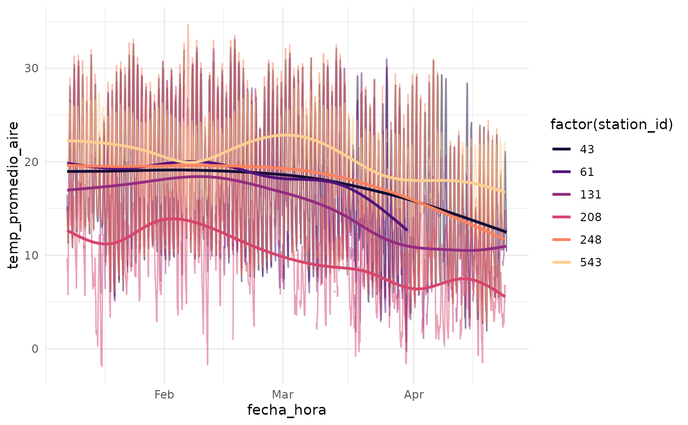

Introduction to agrometR
Source:vignettes/Introduction-to-agrometR.Rmd
Introduction-to-agrometR.RmdDatos de estaciones
data("estaciones_agromet", package = "agrometR")
estaciones_agromet
#> # A tibble: 417 × 8
#> ema institucion nombre_ema comuna region latitud longitud
#> <dbl> <chr> <chr> <chr> <chr> <dbl> <dbl>
#> 1 1 FDF Azapa1 Arica Arica y P… -18.5 -70.2
#> 2 2 FDF Azapa2 Arica Arica y P… -18.5 -70.2
#> 3 3 FDF Tranque Lautaro Tierra Amarilla Atacama -28.0 -70
#> 4 4 FDF Jotabeche Tierra Amarilla Atacama -27.6 -70.2
#> 5 5 FDF Hornitos Tierra Amarilla Atacama -27.7 -70.2
#> 6 6 FDF Copiapo Copiapó Atacama -27.3 -70.4
#> 7 7 FDF Bodega Copiapó Atacama -27.3 -70.4
#> 8 8 FDF Vallenar Freirina Atacama -28.5 -70.9
#> 9 9 FDF Alto del Carmen Alto del Carmen Atacama -28.8 -70.4
#> 10 10 FDF El Palqui Monte Patria Coquimbo -30.7 -70.9
#> # … with 407 more rows, and 1 more variable: fecha_de_alta <dttm>Get data
library(dplyr)
#>
#> Attaching package: 'dplyr'
#> The following objects are masked from 'package:stats':
#>
#> filter, lag
#> The following objects are masked from 'package:base':
#>
#> intersect, setdiff, setequal, union
set.seed(123456)
stations <- estaciones_agromet |>
pull(ema) |>
sample(6)
stations
#> [1] 61 248 43 543 131 208
days_to_plot <- 120
date_time_start <- format(Sys.Date() - days_to_plot*24*60*60/100000, "%Y-%m-%d")
date_time_start
#> [1] "2022-01-09"
date_time_end <- format(Sys.Date(), "%Y-%m-%d")
date_time_end
#> [1] "2022-04-23"
data_stations <- get_agro_data(
stations_id = stations,
date_start = date_time_start,
date_end = date_time_end,
verbose = TRUE
)
glimpse(data_stations)
#> Rows: 14,976
#> Columns: 13
#> $ station_id <dbl> 43, 43, 43, 43, 43, 43, 43, 43, 43, 43, 43, 43, …
#> $ fecha_hora <dttm> 2022-01-09 00:00:00, 2022-01-09 01:00:00, 2022-…
#> $ temp_promedio_aire <dbl> 15.2, 14.5, 13.8, 13.4, 12.8, 12.0, 11.3, 12.1, …
#> $ precipitacion_horaria <dbl> 0, 0, 0, 0, 0, 0, 0, 0, 0, 0, 0, 0, 0, 0, 0, 0, …
#> $ humed_rel_promedio <dbl> 83.2, 85.5, 87.5, 88.5, 89.0, 89.5, 90.0, 91.8, …
#> $ presion_atmosferica <dbl> 1015.0, 1015.1, 1015.0, 1014.8, 1015.2, 1015.5, …
#> $ radiacion_solar_max <dbl> 0.0, 0.0, 0.0, 0.0, 0.0, 0.0, 0.6, 68.4, 95.6, 1…
#> $ veloc_max_viento <dbl> 0.2, 0.1, 0.9, 0.0, 0.0, 0.0, 0.0, 0.4, 0.6, 0.7…
#> $ temp_minima <dbl> 14.9, 14.2, 13.7, 13.3, 12.6, 11.7, 11.1, 11.2, …
#> $ temp_maxima <dbl> 15.6, 14.8, 14.0, 13.6, 13.1, 12.3, 11.5, 13.0, …
#> $ direccion_del_viento <dbl> 180, 180, 180, 180, 180, 180, 180, 180, 180, 181…
#> $ grados_dia <dbl> 889.8, NA, NA, NA, NA, NA, NA, NA, NA, NA, NA, N…
#> $ horas_frio <lgl> NA, NA, NA, NA, NA, NA, NA, NA, NA, NA, NA, NA, …
data_stations |>
count(station_id)
#> # A tibble: 6 × 2
#> station_id n
#> <dbl> <int>
#> 1 43 2496
#> 2 61 2496
#> 3 131 2496
#> 4 208 2496
#> 5 248 2496
#> 6 543 2496Plotting
library(ggplot2)
p <- ggplot(data_stations, aes(fecha_hora, temp_promedio_aire, color = factor(station_id), group = station_id)) +
geom_line(alpha = 0.5) +
geom_smooth(se = FALSE) +
scale_color_viridis_d(option = "magma", begin = 0.1, end = 0.9) +
theme_minimal()
p
#> `geom_smooth()` using method = 'gam' and formula 'y ~ s(x, bs = "cs")'
#> Warning: Removed 2988 rows containing non-finite values (stat_smooth).
#> Warning: Removed 600 row(s) containing missing values (geom_path).
p +
facet_wrap(vars(station_id))
#> `geom_smooth()` using method = 'gam' and formula 'y ~ s(x, bs = "cs")'
#> Warning: Removed 2988 rows containing non-finite values (stat_smooth).
#> Removed 600 row(s) containing missing values (geom_path).Grouping fecha_hora
library(lubridate)
#>
#> Attaching package: 'lubridate'
#> The following objects are masked from 'package:base':
#>
#> date, intersect, setdiff, union
data_stations_daily <- data_stations |>
mutate(fecha_hora = floor_date(fecha_hora, "day")) |>
group_by(station_id, fecha_hora) |>
summarise(
across(.cols = c(temp_promedio_aire, humed_rel_promedio), .fns = mean, na.rm = TRUE),
precipitacion_horaria = sum(precipitacion_horaria, na.rm = TRUE),
.groups = "drop"
)
glimpse(data_stations_daily)
#> Rows: 630
#> Columns: 5
#> $ station_id <dbl> 43, 43, 43, 43, 43, 43, 43, 43, 43, 43, 43, 43, …
#> $ fecha_hora <dttm> 2022-01-09, 2022-01-10, 2022-01-11, 2022-01-12,…
#> $ temp_promedio_aire <dbl> 18.57500, 19.83750, 21.44167, 20.80000, 16.77500…
#> $ humed_rel_promedio <dbl> 72.80417, 67.96250, 66.45417, 70.64167, 82.05000…
#> $ precipitacion_horaria <dbl> 0.0, 0.0, 0.0, 0.0, 0.0, 0.0, 0.0, 0.0, 0.0, 0.0…
ggplot(mapping = aes(fecha_hora, temp_promedio_aire, color = factor(station_id), group = station_id)) +
geom_smooth(data = data_stations, se = FALSE) +
geom_line(data = data_stations_daily, alpha = .3, size = 2) +
scale_color_viridis_d(option = "magma", begin = 0.1, end = 0.9) +
theme_minimal() +
facet_wrap(vars(station_id))
#> `geom_smooth()` using method = 'gam' and formula 'y ~ s(x, bs = "cs")'
#> Warning: Removed 2988 rows containing non-finite values (stat_smooth).
#> Warning: Removed 29 row(s) containing missing values (geom_path).